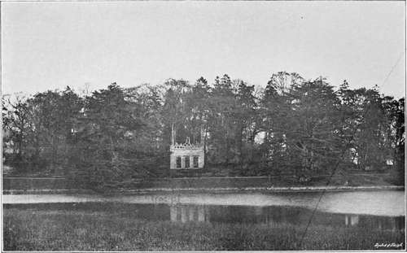
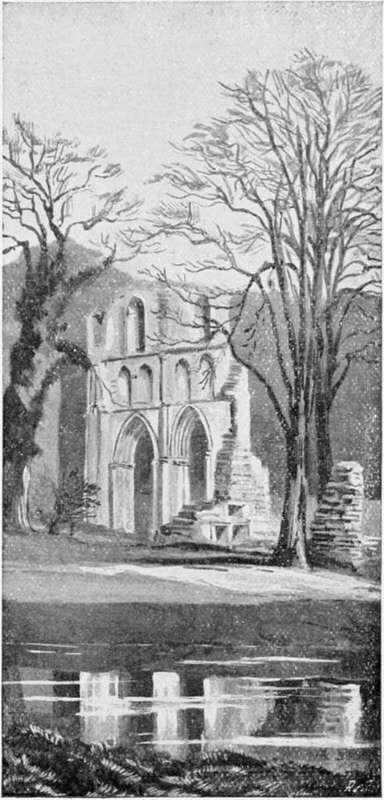
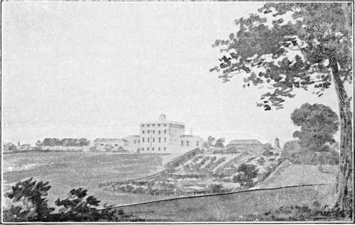
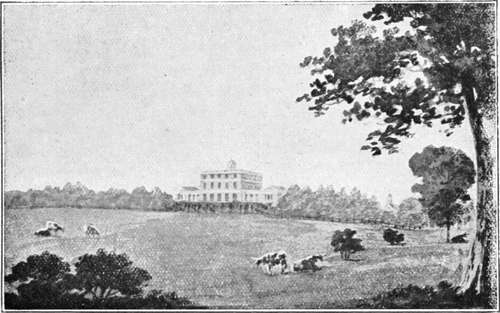

Landscape Gardening. Part 4
Description
This section is from the book "A History Of Gardening In England", by Alicia Amherst. Also available from Amazon: A History Of Gardening In England.
Landscape Gardening. Part 4
Gilpin also doubts the expedience of the alterations Brown was carrying out at Roche Abbey, when he visited that place. Brown, it is said, was himself unable to draw a line, and had had no artistic training, or education sufficient to understand the historical interest, or natural beauties of the scenes he tried to improve. It is therefore not to be wondered at that he signally failed, on many occasions, in his endeavours to create a more suitable landscape. "Many modern places," wrote Gilpin, "he has adorned and beautified, but a ruin presented a new idea, which I doubt whether he has sufficiently considered. He has finished one of the valleys which look towards Laughton spire: he has floated it with a lake, and formed it into a very beautiful scene. But I fear it is too-magnificent and too-artificial an appendage to be in unison with the ruins of an Abbey.".* He levelled all the ground round the old Abbey, leaving the walls and pillars standing in "a neat bowling-green," and he removed all the overgrown pieces of ruin and mounds, which showed the old lines of the building, and even took stones from the Abbey to make the dam in the river, and get the effect of a water-fall. Gilpin most sarcastically remarks, " If Mr. Brown should proceed a step further, pull down the ruin, and build an elegant mansion, everything would then be right." Some of Brown's handiwork about the ruins has of late been removed, and their former conditions, as much as possible, restored.
BURGHLEY. THE TEMPLE DESIGNED BY BROWN.
The following is the Agreement between Brown and Lord Scarbrough made at the time of these alterations †:—
The Agreement between Lord Scarbrough and "Capability Brown," 1774:—
September the 12th, 1774.
Then an Agreement made between the Earl of Scarbrough on the one Part, and Lancelot Brown on the other, for the underwritten Articles of Work to be Performed at Sandbeck in the County of York (To Wit) :
Article The 1st
To compleat the sunk Fence which separates the Park from the Farm, and to Build a Wall in it, as also to make a proper Drain at the Bottom of the Sunk Fence to keep it Dry.
Article The 2nd
To demolish all the old Ponds which are in the Lawn, and to level and Drain all the ground where they are.
Article The 3rd
To Drain and level all the ground which is between the above mentioned Sunk Fence and the old Canals mentioned in the Second Article. To plant whatever Trees may be thought necessary for Ornament in that Space discribed in this Article, and to sow with grass seeds and Dutch Clover the whole of the ground wherever the Turf has been broke up or disturbed by Drains, Leveling or by making the Sunk Fence.
* Gilpin, 0bs. on Picturesque Beauty, 1776, Particularly the Highlands of Scotland.
† Copied from the original MS. at Sandbeck, by the kind permission of the Earl of Scarbrough.
Roche abbey.
Article The 4th
To make good and keep up a Pond for the use of the stables.
Article The 5th
To finish all the Valley of Roach Abbey in all its Parts, according to the Ideas fixed on with Lord Scarbrough (with Poet's feeling and with Painter's eye) beginning at the Heads of the Hammer Pond and continuing up the Valley towards Loton, als: Loughton in the Morn, as far as Lord Scarbroughs ground goes, and to continue the Water and Dress the Valley up by the Present Farm House untill it comes to the seperation fixed for the Boundary of the New Farm. N : B: The Paths in the Wood are included in this Discription and every thing but the Buildings. The said Lancelot Brown does Promise for himself His Heirs Executors and Administrators to perform or cause to be Performed in the Best manner in His or Their Power between the Date hereof and December one Thousand Seven Hundred and Seventy Seven, the above written five Articles. For the Due Performance of the above written five Articles The Earl of Scarbrovgh does Promise for himself His Heirs Administrators and Executors to Pay or cause to be Paid at the underwritten Times of Payment Two Thousand Seven Hundred Pounds of Lawfull money of England, and three Hundred Pounds in consideration of and for the Plans and trouble Brown has had for his Lordship at Sandbeck, previous to this Agreement. Lord Scarbrough to find Rough Timber, four able Horses, carts, and Harness for them, wheelbarrows and Planks, as also Trees and Shrubbs. The Times of Payment in:
June, 1775 | £800 |
Feb. 1776 | 400 |
June, D0. | 400 |
Feb. 1777 | 600 |
On Finishing the work | 800 |
£3000 |
(Signed) Scarbrough.
Lancelot Brown.
The melancholy spectacle presented by some of the stately houses surrounded by the stiff and unreal " natural landscape" substituted by Brown for the carefully designed and well-kept old gardens, is thus described by Knight*: —
" Oft when I've seen some lonely mansion stand Fresh from the improver's desolating hand, 'Midst shaven lawns that far around it creep In one eternal undulating sweep; And scattered clumps, that nod at one another, Each stiffly waving to its formal brother : Tired with the extensive scene, so dull and bare, To Heaven devoutly I've address'd my prayer ; Again the moss-grown terraces to raise, And spread the labyrinth's perplexing maze ; Replace in even lines the ductile yew, And plant again the ancient avenue. Some features then, at least, we should obtain To mark this flat, insipid, waving plain : Some vary'd tints and forms would intervene To break this uniform, eternal green".
Although Brown was assailed by Gilpin, Price, Knight, and Mason, he had many adherents and imitators. Repton is the best known of these. He was an admirer of Brown's works, and carried out designs in the same style. As, however, men had now begun to find out Brown's mistakes, and reflect on his destruction of old places and historical relics, Repton could scarcely venture to suggest such sweeping alterations as Brown had made. Repton was openly an opponent of those who wrote against Brown, yet their ideas evidently influenced his judgment. He did not always alter all he found at a place, before commencing additions ; and he did not entirely confine himself to the " landscape" style. He maintained that a " Flower garden should be an object detached and distinct from the general scenery of the place; and whether large or small, whether varied or formal, it ought to be protected from hares and smaller animals by an inner fence; within this enclosure rare plants of every description should be encouraged, and provision made of soil, and aspect for every different class. Beds of bog earth should be prepared for the American plants : the aquatic plants, some of which are peculiarly beautiful, should grow on the surface or near the edges of water. The numerous class of rock-plants should have beds of rugged stone provided, without the affectation of such stones being the natural production of the soil ; but, above all, there should be poles or hoops for those kind of creeping plants which spontaneously form themselves into graceful festoons when encouraged and supported by art." * Such was Repton's idea of a flower-garden, but that was to form but a small portion of the design and its very existence seemed to him to require an apology. He boasts that he had " frequently been the means of restoring acres of useless garden to the deer or sheep, to which they more properly belong," yet he sometimes designed a small formal garden for flowers. The " Dutch garden" at Hewell Grange was made according to his suggestions. † It is a semicircle, surrounded by a cut Thuja hedge, and a high brick wall across the straight side. The beds within are edged with box, between which are small gravel paths tiled in the middle, and a sundial in the centre of the garden. He also designed the lawn and rock-garden while an older French garden, approached by cut yew hedges, he did not interfere with. Much as he disliked avenues as being " utterly inconsistent with Natural scenery,"* he occasionally respected "such marks of ancient dignity." At Finedon, although he thought the view " encumbered " by the vicarage and church, and said the garden wall, malt-house, pigeon-house, and even part of the village " must be removed," he spared the avenue called the " Holly Walk".
* " The Landscape," A didactic poem in III Books, addressed to Sir Uvedale Price by R. P. Knight, 2nd Ed., 1795.
Woodford. no. I. from a drawing By H. REPTON.
* Repton, Obs. on Landscape Gardening, 1803.
† MS. "Red Book " of Repton, belonging to Lord Windsor.
Woodford. no. 2. from the same drawing by h. repton, showing the suggested improvements.
Continue to: